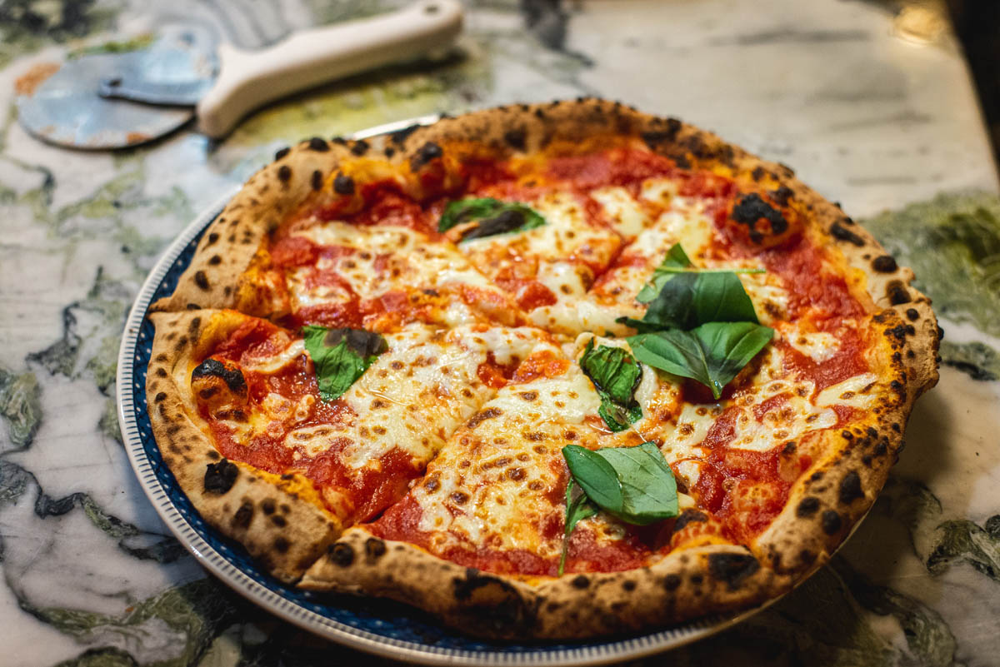

Pizza

Italian Style Pizza
This is a world famous and much loved pizza recipe, there are many variations but keeping it simple this is a basic version that is sure to please all!
Ingredients you'll need
- 300g All purpose flour
- 1 tsp granulated sugar
- 1 tsp active dried yeast
- 1 tsp salt
- 1 tsp salt>
- Extra virgin olive oil
- Semolina for dusting
- Tinned plumbed tomatoes
- Fresh garlic
- Black pepper
- Parmigiano-reggiano cheese
- Mozzarella
- Fresh basil
How to prepare
- Prepare Pizza DoughIn a medium bowel, whisk together the all purpose flour, sugar, yeast, salt. Add the warm water and olive oil, and stir the mixture with a wooden spoon until the dough just starts to come together.
- scrape the dough onto a well dusted countertop and knead the dough for 3 minutes, it will come together quickly and become sticky, continue to dust as needed.
- place dough in a well greased bowel, cover and leave to rise for 2 hours in a warm area
- Preheat Oven and Pizza Steel or Stone: Place the pizza steel (or stone) on the second to top rack of your oven (roughly 8 inches from the broiler element), and preheat the oven and steel (or stone) to 550°F (285°C) for a minumum of 1 hour. If your oven does not go up to 550°F (285°C) or you are using a delicate pizza stone, I recommend heating it to a maximum of 500°F (260°C)
- As the oven is preheating, assemble the ingredients. In a small bowl, stir together the pureed tomatoes, minced garlic, extra virgin olive oil, pepper, and salt. Set aside another small bowl with the cubed mozzarella cheese (pat the cheese with a paper towel to remove any excess moisture). Set aside the basil leaves and grated parmigiano-reggiano cheese for easy grabbing.
- Separate the dough into two equal-sized portions. It will deflate slightly, but that is OK. Place the dough on a large plate or floured counter top, cover gently with plastic wrap, and allow the dough to rest for 5 to 10 minutes.
- Assemble the Pizza: Sprinkle the pizza peel (if you do not own a pizza peel, you can try using the back of a half sheet pan - but it is tricky!) with a tablespoon of semolina and dusting of all-purpose flour. Gently use both hands to stretch one ball of pizza dough into roughly a 10-inch circle (don’t worry if its not perfectly uniform). If the dough springs back or is too elastic, allow it to rest for an additional five minutes. The edges of the dough can be slightly thicker, but make sure the center of the dough is thin (you should be able to see some light through it if you held it up). Gently transfer the dough onto the semolina and flour dusted pizza peel or baking sheet.
- Drizzle or brush the dough lightly (using your fingertips) with olive oil (roughly a teaspoon. Using a large spoon, add roughly ½ cup of the tomato sauce onto the pizza dough, leaving a ½-inch or ¾-inch border on all sides. Use the back of the spoon to spread it evenly and thinly. Sprinkle a tablespoon of parmigiano-reggiano cheese onto the pizza sauce. Add half of the cubed mozzarella, distributing it evenly over the entire pizza. Using your hands, tear a few large basil leaves, and sprinkle the basil over the pizza. At this point, I’ll occasionally stretch the sides of the dough out a bit to make it even thinner. Gently slide the pizza from the peel onto the heated baking stone. Bake for 7 to 8 minutes, or until the crust is golden and the cheese is bubbling and caramelized and the edges of the pizza are golden brown.